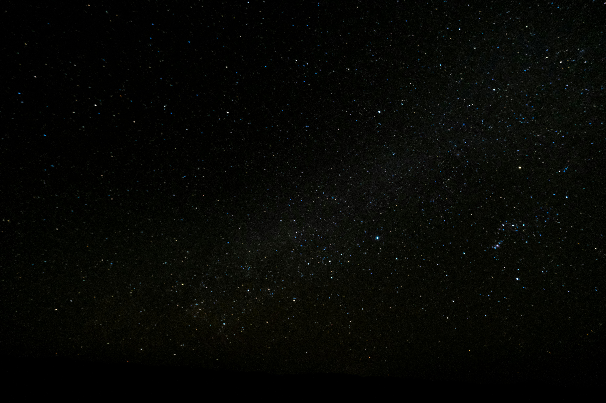

Добро пожаловать в подборку нейросетей для обучения! 📚 Здесь вы найдете лучшие инструменты и ресурсы, которые помогут вам обучаться гораздо эффективнее.🚀 Я тщательно отобрал нейросети, чтобы предложить вам максимальную эффективность и удобство. Раздел подходит как для новичков, так и для опытных специалистов, желающих расширить свои знания и навыки.
🤖 Нейросети — это сложные вычислительные модели, которые учат компьютеры распознавать шаблоны, обрабатывать информацию и принимать решения на основе данных. Эти технологии лежат в основе многих современных приложений, от распознавания изображений и обработки естественного языка до анализа больших данных. Обучение нейросетям может стать вашим первым шагом на пути к профессии в области искусственного интеллекта! 💻
Интуитивно понятные интерфейсы: Подборка предлагает нейросети с простыми в использовании интерфейсами, которые позволяют сосредоточиться на обучении, а не на сложных технических деталях. 👍 Разнообразие задач: Каждая нейросеть в подборке нацелена на решение конкретной задачи — от классификации и сегментации данных до генерации контента и анимации. 🎯 Поддержка и примеры: Большинство нейросетей предоставляет обширную документацию, туториалы и примеры кода, что позволяет вам быстро приступить к работе и эффективно обучаться. 📖
Для того чтобы начать обучение на нейросетях, вам нужно: Выбрать нейросеть, которая соответствует вашим интересам и целям. ✅ Изучить документацию и материалы, доступные для каждой модели, чтобы понять ее возможности и способы использования. 📊 Попробовать примеры, предлагаемые разработчиками, и адаптировать их под свои задачи. 📝 Практиковаться с реальными проектами и задачами, чтобы закрепить свои знания и навыки. 🔧